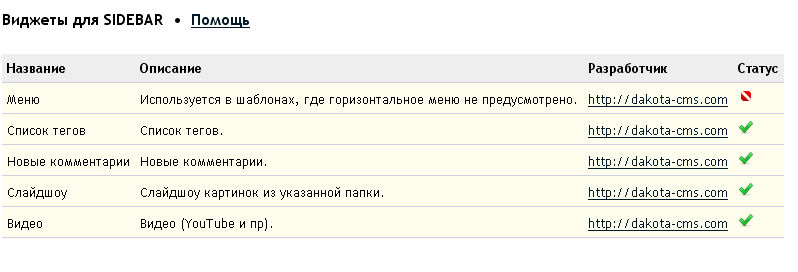

Виджеты для SIDEBAR
Информация
- Виджеты - маленькие куски кода, которые выводятся в боковую панель внутри тэга ‹div id="sidebar"›
- Виджеты могут содержать php, javascript и html
- Виджеты подключаются по алфавиту, поэтому для смены порядка вывода просто переименуйте их
- Включить/отключить - в коде виджета укажите $widget_info['active'] = 1 или 0 соотв.
Создать свой виджет просто
- Cкопируйте любой виджет в папке /widgets/ и назовите по шаблону 04_mywidget.php
- Заполните информацию о разработке
- Рзместите свой код между комментариями
- Пишите на нативном PHP или объявите $CI = & get_instance() и пользуйтесь Codeiginter
- Поделитесь разработкой с сообществом
- Подключение автоматическое, поэтому не выгружайте неотлаженный Виджет на продакшн-сервер. Убедитесь, что Виджет нормально отображается в основных брузерах и в списке Админе-центра.
